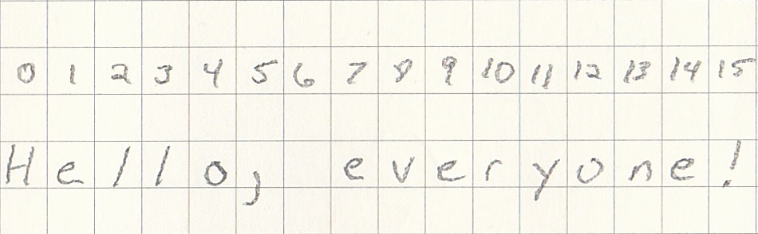

What is a variable?¶
When we are developing our idea, we sometime need to use values multiple times or change the value based on our code. This is where variables become very helpful. Let’s look at an example.
In this example, we are adding a few numbers togethers. In this instance, if all we care about is getting the result (similar to a calculator). Then variables are not needed.
5 + 3 + 16
24
But let’s look an example where we need to get the circumference of a circle using multiple radii. The equation for the circumference of a circle is: \(C = 2 \pi r\)
Let’s say the radius is 5
2 * 3.14159265359 * 5
31.4159265359
OK, how about radius 10 and 11 and 4 and … Well in this, we might not want to rewrite 3.14159265359 over and over. So, in this case, we want to create a variable for this and we will call it pi.
pi = 3.14159265359
Now, every time we reference the variable called pi it will refer to the number 3.14159265359
Let’s try those radii again (10, 11, 4)
2 * pi * 10
62.8318530718
2 * pi * 11
69.11503837898
2 * pi * 4
25.13274122872
By the way, if you happen to get an error:
NameError: name 'pi' is not defined
Make sure you go to the cell that has
pi = 3.14159265359
and run this cell first then try the other calculations.
Type of Variables¶
There are multiple types of variables. The most common (and the ones we will talk about) are:
Integers (whole numbers)
Float (Floating points or numbers with a decimal)
Text
Lists
Dictionaries
The nice thing about Python is that we do not need to specify (or declare) which type we are using. Python will figure this out for us!
BUT FIRST, a quick detour…
We need to talk about Camel Casing.
Camel Case¶
 Variable names must be one continous string of letters/numbers. So, let's say we wanted to create a variable called "number of kittens." Instead calling this variable number of kittens, I would call it numberOfKittens. Why the capitalization? because it makes it easier to separate out the words in the name. As in, numberofkittens vs. numberOfKittens. We have a fun name for this: camel case.
Variable names must be one continous string of letters/numbers. So, let's say we wanted to create a variable called "number of kittens." Instead calling this variable number of kittens, I would call it numberOfKittens. Why the capitalization? because it makes it easier to separate out the words in the name. As in, numberofkittens vs. numberOfKittens. We have a fun name for this: camel case. File:CamelCase new.svg. (2020, April 15). Wikimedia Commons, the free media repository. Retrieved 15:25, June 3, 2020 from https://commons.wikimedia.org/w/index.php?title=File:CamelCase_new.svg&oldid=411544943.
{kind=link}
Integers or int¶
As mentioned, integers are whole numbers. Let’s create an example. How about we use our numberOfKittens. We will then set this value to 0. As in, we have 0 kittens.
numberOfKittens = 0
One thing we might want to do is to have Python tell us what type this variable is. Well Python has a function for this called
type()
type( numberOfKittens )
int
So this checks out, we made an int and it is showing us we have an int.
Now, once we have a variable, it is not static. We can change the value as much as we need to. Running the next cell will continually add 10 to our original variable.
Try running this a few times.
numberOfKittens = numberOfKittens + 10
numberOfKittens
10
or
in more human-readable terms.
numberOfKittens (new value 10) = numberOfKittens (originally 0) + 10
numberOfKittens is now 10
or
Floating points or floats¶
Floats are similar to integers, but with more precision. Float comes from Floating point or a number with a decimal point.
This example starts at 0, but note that this is .0 Adding the decimal tells Python that we should have a float value instead of an interger.
aFloatVariable = .0
Let’s again, check the variable type.
type( aFloatVariable )
float
Looks good.
And again, we will add 10 to this. There is something specific interesting here, see if you spot it.
aFloatVariable = aFloatVariable + 10 aFloatVariable
If you guessed “mixing a float and interger,” you got it. Let’s see an example.
Mixing integers and floats¶
In Python (3, more specifically), the variable will always take the form of the most precision. So, by default, a float.
letsSeeWhatHappens = numberOfKittens + aFloatVariable
letsSeeWhatHappens
10.0
We can force variables to be a certain type. We call this ‘type-cast’ and can be used to:
make an integer into a float
a float to an integer
an integer to a string (we have not discussed this yet)
a float to a string (we have not discussed this yet)
etc…
type-cast¶
Note
type-cast is temporary. If you do not use a type-cast, the variable will revert back to its original variable type.
Let’s switch our numberOfKittens to a float using
float()
and turn our aFloatVariable to an integer using
int()
float(numberOfKittens)
10.0
int(aFloatVariable)
0
Common Question
What happens when you convert a float like .5 to an integer? Does it round up or down?
Well let’s see what happens.
printList = []
for i in range(10): printList.append("for value %s we will get %s" % ((i/10),int(i/10)))
display(md('<br />'.join([str(elem) for elem in printList])))
for value 0.0 we will get 0
for value 0.1 we will get 0
for value 0.2 we will get 0
for value 0.3 we will get 0
for value 0.4 we will get 0
for value 0.5 we will get 0
for value 0.6 we will get 0
for value 0.7 we will get 0
for value 0.8 we will get 0
for value 0.9 we will get 0
So, in conclusion. It will always round down.
String or str¶
So, up to this point, we started our conversation working with numbers. Well, what about the other things that are not numbers… like text? Well for text, we use something called a String or str.
Strings allow us to capture a single character up to thousands of charcters (actually, much more than this). Let’s go through a tradition example of “Hello, World!” but with my slight spin to it.
helloStatement = "Hello, everyone!"
As you can see, can capture text and other alphanumeric and special characters. There are several unique functions for strings but first, let’s double check and see what type we from our helloStatement.
type( helloStatement )
str
Not too suprising, we see this is type str or string.
Note
For those coming from another programming language. Sometimes other programming languages will have a specific designation for a single character string or as it is called, a character. Python has a one-size fits-all label for text and that is string. Here, let me prove it.
singleCharacter = "a"
type( singleCharacter )
str
String Indexing/String Slicing¶
One of the first way to interact with our string is to take a lookg at individual characters by using their index.
The index is position (or multiple positions) for each character in the string. So, if we look at our string, we have Hello, everyone! If we wanted to see the first letter H, we can reference this using the index or the position where the letter is in the string.
helloStatement[1]
'e'
ohh.. wait a minute. We were expecting the letter H but we got e. What happened?
Note
For indexes, we always start at the number 0. So, 0 is the first thing, 1 is the second thing, and so on.
Let’s try this again.
helloStatement[0]
'H'
There we go!
Visually, this is how the string looks to Python.


print( helloStatement[0:5] )
Hello
print( helloStatement[:5] )
Hello
print( helloStatement[5:] )
, everyone!
String functions¶
################
## Find
################
print( helloStatement.find("one") )
print( helloStatement.find("me") )
print( helloStatement.capitalize() )
print( helloStatement.lower() )
print( helloStatement.split(" ") )
12
-1
Hello, everyone!
hello, everyone!
['Hello,', 'everyone!']
What will this do?
print( helloStatement.capitalize().lower() )
# We can chain these!
print( helloStatement[:5].capitalize() )
hello, everyone!
Hello
Concatenating Strings¶
courseName = "bio"
courseNumber = "101"
print( courseName+courseNumber )
print( "%s%s" % (courseName,courseNumber) )
bio101
bio101
Why I like to use %s
variable1 = "variable1"
variable2 = "variable2"
variable3 = "variable3"
variable4 = "variable4"
variable5 = "variable5"
print( variable1 + "," + variable2 + "," + variable3 + "," + variable4 + "," + variable5 )
print( "%s,%s,%s,%s,%s" % (variable1,variable2,variable3,variable4,variable5) )
variable1,variable2,variable3,variable4,variable5
variable1,variable2,variable3,variable4,variable5
# let's concatenate the strings
courseNameNumber = "%s%s" % (courseName,courseNumber)
print( courseNameNumber )
print( "I am currently sitting in %s" % (courseNameNumber) )
bio101
I am currently sitting in bio101
Booleans¶
Booleans are used to do comparisions (true/false), (1/0), (yes/no)
someCondition = True
type( someCondition )
bool
# Will come back to this in a second (==)
(someCondition == False)
False
if (False):
print( "yes for False!" )
if (True):
print( "yes for True!" )
yes for True!
if (0): print “yes for 0!” if (1): print “yes for 1!”
Lists¶
Lists (or also known as Arrays) are exactly that. A list of data. Exmaple:
groceryList = ["apple", "banana", "eggs"]
print( groceryList )
['apple', 'banana', 'eggs']
# or another way
groceryList = []
groceryList.append("apple")
groceryList.append("banana")
groceryList.append("eggs")
print( groceryList )
['apple', 'banana', 'eggs']
We can access each entry by using an index number (remember starts at 0)
print( groceryList[2] )
print( groceryList[0] )
print( groceryList[1] )
print( groceryList[3] )
eggs
apple
banana
---------------------------------------------------------------------------
IndexError Traceback (most recent call last)
<ipython-input-37-0a77fb05d512> in <module>
2 print( groceryList[0] )
3 print( groceryList[1] )
----> 4 print( groceryList[3] )
IndexError: list index out of range
To do this more efficiently, we will be using loops (for and while, we will talk about later).
Dictionary¶
Dictionaries are used to index based on a specific key. As in:
dictionary[“street adddress” (key)] = “123 Apple St.” (value)
personalInformation = {}
personalInformation["streetAddress"] = "123 Apple St."
personalInformation["firstName"] = "Patrick"
personalInformation["lastName"] = "Dudas"
print( personalInformation )
Note the order.
Again, to do this more efficiently, we will be using loops (for and while, we will talk about later).